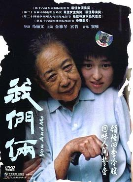

我们俩
又名：You and Me
原来是这么老的电影，之前是在《过春天》的推荐列表里面，以为也是近年的。感觉新世纪的穷留学生也是这种感觉，因为budget有限，只能自己一个人出来，找房子也是找便宜的。得亏房东人不错，找的第一个便宜的房子一住就是三年零八个月，直到我离开阿德。在阿德就没换过住的地方，和其他留学生的经历可能很不一样，不过确实也少了很多事。就看起来还挺有感触，家里的老人也是挺“精明”，和片里的金老太一样，只不过“精明”的资本不多罢了，总之就是很难变得很nice。有时候会羡慕别人家的老人，anyway。
作品信息
| 导演 | 马俪文 |
| 编剧 | 马俪文 |
| 主演 | 宫哲 / 金雅琴 / 张淑芳 / 孙捷 / 罗忠学 / 强爽 / 刘正亮 |
| 类型 | 剧情 |
| 制片国家/地区 | 中国大陆 |
| 语言 | 汉语普通话 |
| 上映日期 | 2006-04-10(中国香港电影节) / 2005-10(东京电影节) |
| 片长 | 88分钟 |
| IMDb | tt0757376 |
说过什么
2021-03-14 08:14:29
广播 · 看过 · ★★★★☆
原来是这么老的电影，之前是在《过春天》的推荐列表里面，以为也是近年的。感觉新世纪的穷留学生也是这种感觉，因为budget有限，只能自己一个人出来，找房子也是找便宜的。得亏房东人不错，找的第一个便宜的房子一住就是三年零八个月，直到我离开阿德。在阿德就没换过住的地方，和其他留学生的经历可能很不一样，不过确实也少了很多事。就看起来还挺有感触，家里的老人也是挺“精明”，和片里的金老太一样，只不过“精明”的资本不多罢了，总之就是很难变得很nice。有时候会羡慕别人家的老人，anyway。
最后一次看到是 2026-08-01T11:05:23+10:00 · 豆瓣原页